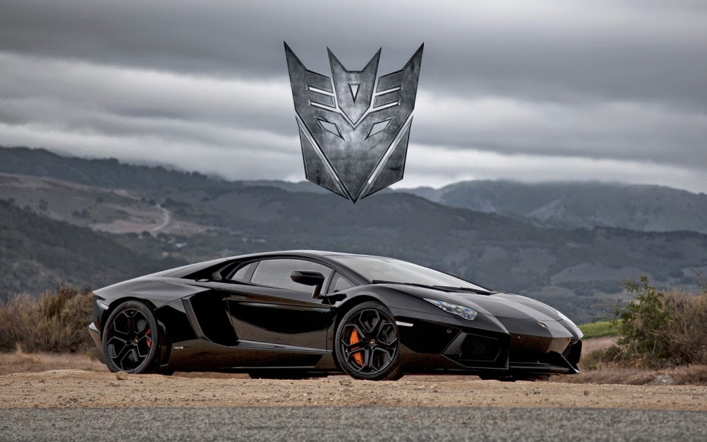

Lockdown thực chất là một thợ săn tiền thưởng, luôn hoàn thành các hợp đồng và nhiệm vụ mà anh ta được giao miễn là anh ta được trả tiền. Anh ta không thực sự quan tâm những gì anh ta phải làm để hoàn thành hợp đồng của mình, mong muốn phá hủy toàn bộ hành tinh nếu cần thiết. Sự tôn trọng của anh ta đối với các loài khác cũng không quá lớn, đôi khi lầm bầm về khách hàng của chính mình và nói với họ một cách mỉa mai. Lockdown được biết đến với việc cướp vũ khí từ những kẻ thù mà anh ta giết, vì vậy kho vũ khí của anh ta liên tục thay đổi! [1]
Những ngày này, một vết sẹo dài chạy dọc trên khuôn mặt của anh ấy. Có rất nhiều tin đồn về nguồn gốc của nó, một số nói rằng đó là sự đụng độ với Megatron , nhưng không ai biết chắc chắn...

Lockdown được giao nhiệm vụ bởi những Người sáng tạo bí ẩn để bắt tất cả các "hiệp sĩ" lừa đảo của họ. Anh ta đã dành nhiều thế kỷ cho nhiệm vụ này, sử dụng một con tàu được trưng dụng và cải tạo từng thuộc về chính các hiệp sĩ như một nhà tù di động để chứa và vận chuyển nhiều tù nhân khác nhau của anh ta. Cuối cùng, anh ta đã thành công trong việc bắt giữ tất cả các hiệp sĩ trừ một người— Optimus Prime . Để giành được giải thưởng cuối cùng này, Lockdown đã du hành đến Trái đất và gia nhập lực lượng với tổ chức con người là Nghĩa trang Gió , những người đang trong quá trình săn lùng và giết chết bất kỳ người Cybertronian nào còn sống sót sau trận chiến Chicago . Để đổi lấy sự an toàn của Prime, anh ta đã hứa với Harold Attingermột Seed , một thiết bị có thể tạo ra một vùng đất rộng lớn trên mạng. Vài năm sau Trận chiến Chicago, Lockdown và Nghĩa trang Gió định vị Optimus Prime ở Thành phố Mexico và bị tấn công; mặc dù Lockdown có thể khiến Prime bị thương nặng, nhưng các đặc nhiệm của con người đã không thể ngăn chặn được Prime, và anh ta đã trốn thoát và lẩn trốn.
Một mẹo nặc danh từ một thường dân hoảng loạn đã cho phép Nghĩa trang Gió xác định vị trí của Optimus tại nhà của Cade Yeager ở Texas. Lockdown kéo đến một sân bóng chày gần đó và biến hình, triển khai móc của mình để trèo lên một silo chứa ngũ cốc gần đó. Khi Optimus lộ diện và bắt đầu chiến đấu chống lại các đặc vụ con người của Nghĩa trang Gió, Lockdown đã bắn phá nhà Yeager bằng một loạt tên lửa, phá hủy nó. Lockdown sau đó đã truy đuổi Prime trên đường cao tốc, và cuối cùng giao chiến với Prime trên mái nhà của một nhà máy bỏ hoang. Prime đã cố gắng vô hiệu hóa Lockdown trong giây lát bằng cách ném anh ta vào dây cáp cẩu, cho phép thủ lĩnh Autobot trốn thoát một lần nữa cùng với các đồng minh con người của anh ta; Lockdown đã giải thoát bản thân kịp thời để cố gắng ngăn chặn chúng bằng một quả lựu đạn, nhưng nạn nhân duy nhất của vụ nổ là Lucas Flannery .